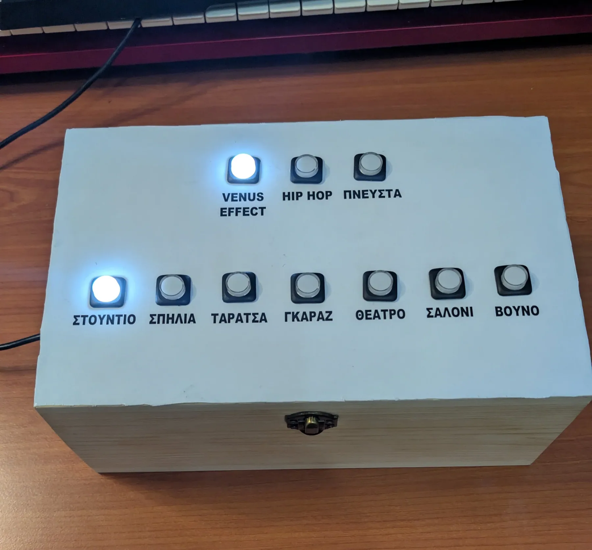
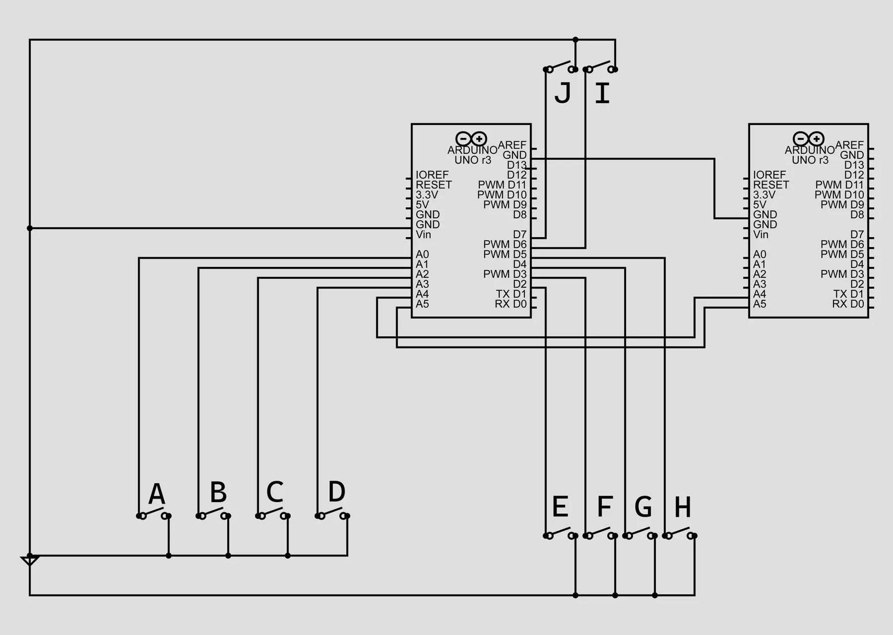
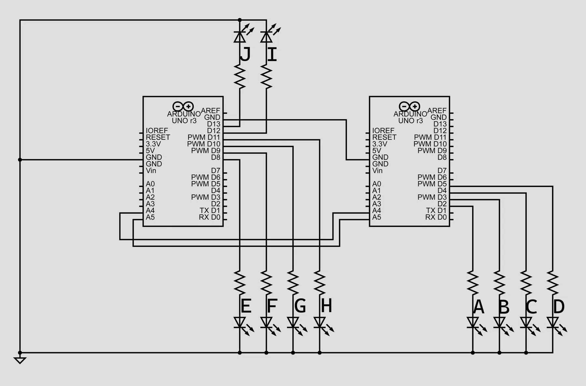
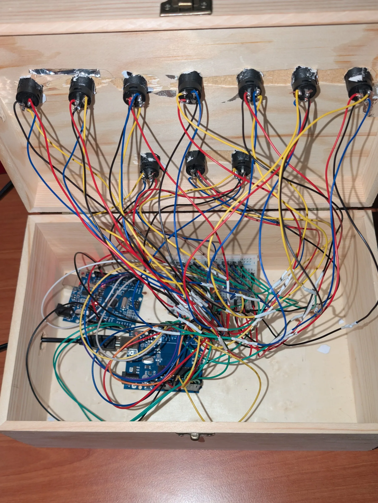

Video Selector Console
Κονσόλα επιλογής σχήματος και χώρου ηχογράφησης σε πραγματικό χρόνο.

Κατά το 5ο εξάμηνο της φοίτησής μου στο Μητροπολιτικό Κολλέγιο δημιουργήθηκε μια ομάδα 4 ατόμων για το μάθημα του Public Project. Κατά το εξάμηνο αυτό εγώ και η ομάδα μου αποφασίσαμε να ερευνήσουμε τον τρόπο με τον οποίο επηρεάζει η ακουστική του χώρου μία ηχογράφηση. Έτσι ηχογραφήσαμε 3 διαφορετικά σχήματα σε 7 διαφορετικούς χώρους. Κατά την προετοιμασία για την παρουσίαση του project κατασκεύασα αυτήν την κονσόλα.
Η λογική πίσω από την κονσόλα είναι ότι ο κάθε χρήστης μπορεί να επιλέξει το σχήμα που θέλει να ακούσει επιλέγοντας ένα από τα 3 πλήκτρα στην επάνω σειρά και να αλλάξει σε πραγματικό χρόνο, ενώ εκτελείται το μουσικό έργο, τον χώρο στον οποίο γίνεται η ηχογράφηση.
Για τη δημιουργία της κονσόλας χρησιμοποιήθηκαν 10 illuminated push buttons και 2 Arduino Uno.
Συνδεσμολογία


Κώδικας
allButtonsMASTER: ο κώδικας για το master ArduinoallButtonsSLAVE: ο κώδικας για το slave Arduino